Designing the WasteMart driver app: every collection, from start of day to sign-off
WasteMart has been a GEMIS client since 2013, on one system for quotes, payment links, scheduling and drivers. The driver app is where a collection is confirmed. This is its operational prototype: a driver’s whole day, on one phone.
Client
WasteMart
Industry
Waste management and skip hire
Service evidenced
Product Teardown
Scope
The driver app — start of day to check-out
Deliverable
An operational phone prototype
Built by
GEMIS developers
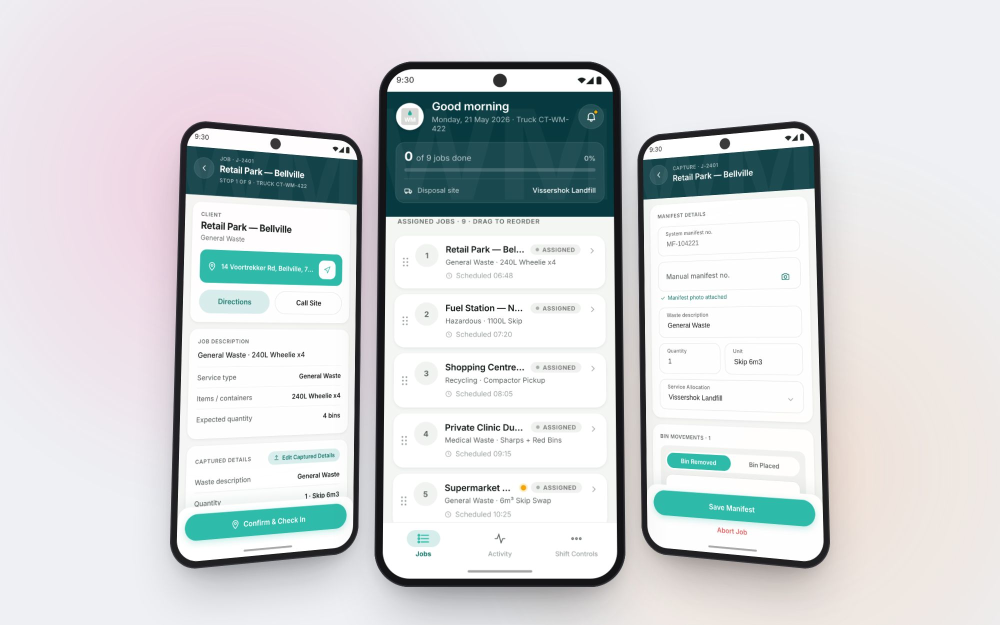
The driver app: the route, a job, and the manifest.
Every screen on this page is from the WasteMart driver app’s operational prototype, with sample data: the jobs, sites, people and vehicles are illustrative, not WasteMart’s records.
02 · The brief
Close the loop at the kerb.
A business that needs its waste removed should be able to make one call. Behind that call at WasteMart sat a lot of manual work: building the quote, attaching the right terms, chasing payment, and then remembering to tell operations that a job was on.
At the end of that chain is the driver. In the WasteMart system, the driver’s confirmation closes the loop, so the app has to make a day of collections quick to work through — in a cab, between stops.
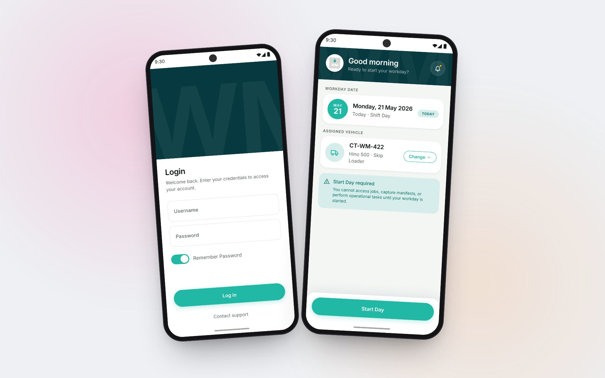
Log in, then start the day: the date, the truck, and nothing else until the workday begins.
03 · The challenge
Four jobs behind one phone call.
Sales, finance and operations each held part of the picture, so proof of payment was chased, jobs were scheduled late, and nobody — including the customer — could see where an order stood.
What the system had to answer:
Quotes were built by hand and the right terms attached from memory.
Payment was chased, and proof of payment waited for.
Operations found out about jobs late — only once someone remembered to tell them.
Nobody, including the customer, could see where an order stood.
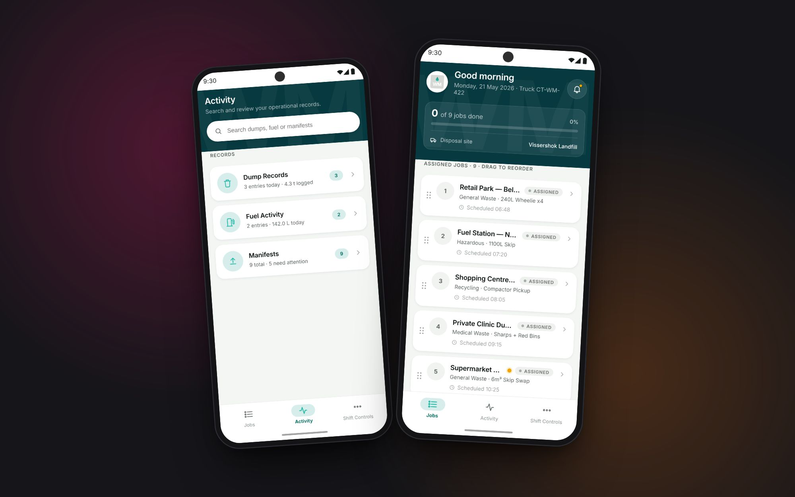
The route and the day’s records, kept with the driver.
04 · What we designed
A driver’s day, one screen at a time.
The app follows the day in order — start, route, arrive, capture, sign, move on — and each screen asks the driver for one thing.
01 / 06
Start the day with a truck
The driver picks a vehicle from the trucks available at the depot, each with its odometer, last check and status; a truck in service shows as unavailable. Until the workday is started, jobs and manifests stay locked, so every record that follows is tied to a date, a driver and a truck.
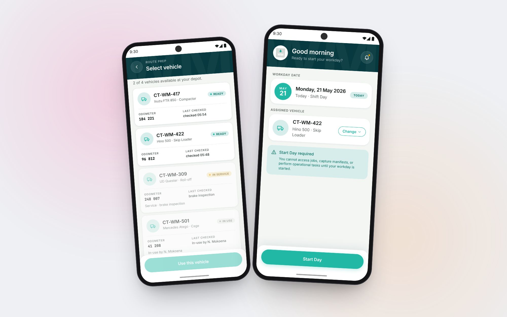
Start of day and vehicle selection: availability, odometer and last check.
02 / 06
The route, in order
The day’s stops come as one list: each job with its waste type, containers and scheduled time, the day’s disposal site, and a progress bar that fills as jobs close. Stops can be dragged into a better order.
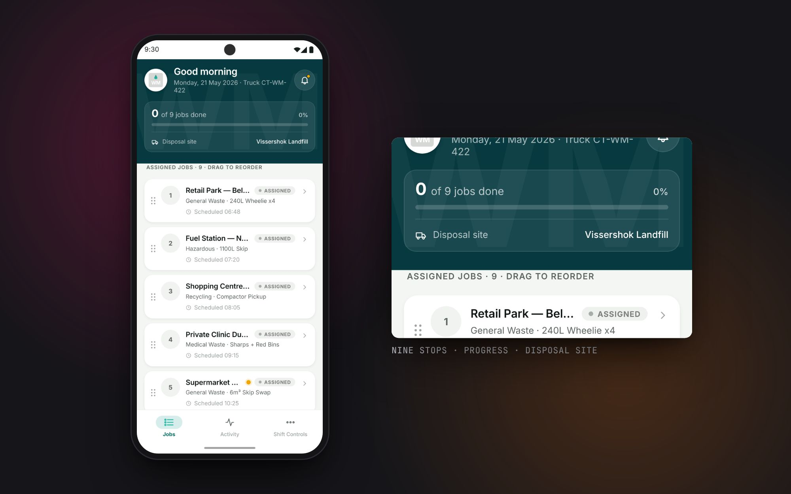
The route: nine stops, the disposal site, and the day’s progress.
03 / 06
Arrive, then check in
A job opens on the client, the site address with directions and a call button, and what is to be collected. Checking in is confirmed in a dialog that records the client, address, time and truck.
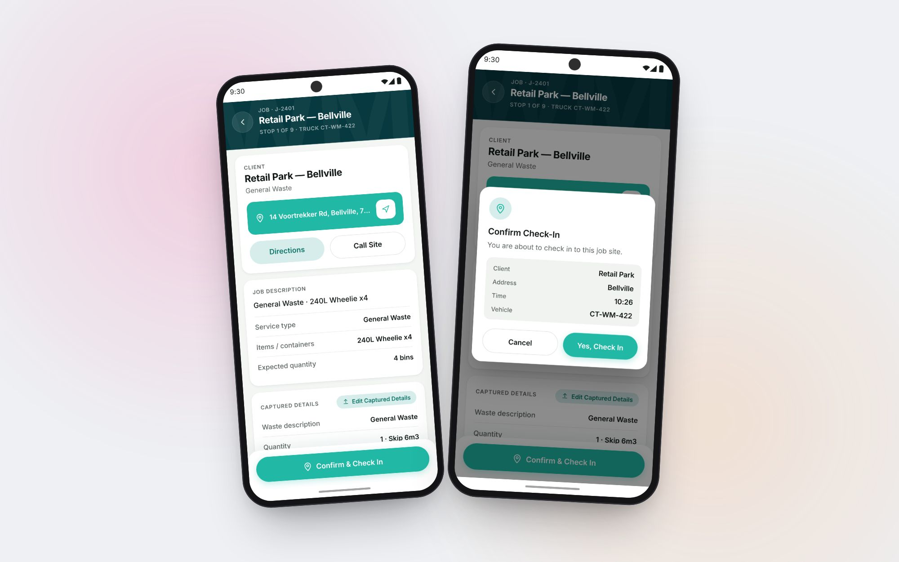
The job, and the check-in that records time and truck.
04 / 06
The manifest, captured once
On site the driver captures the manifest: its number, or a photo of the paper one; the waste description, quantity and unit; and where it is going. Bins removed and placed are counted, and recycling bags are scanned by barcode rather than written down.
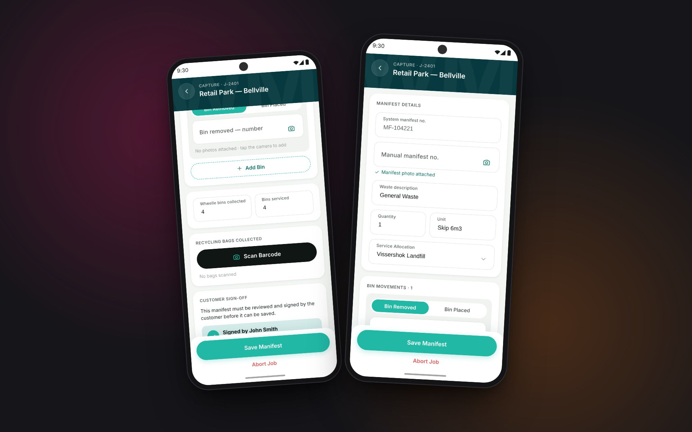
Manifest capture: the details, the bins, and the bag scan.
05 / 06
Signed off by the customer
The customer reviews the details and signs on the screen. A manifest cannot be saved until it is signed, so every collection leaves with the customer’s confirmation attached.
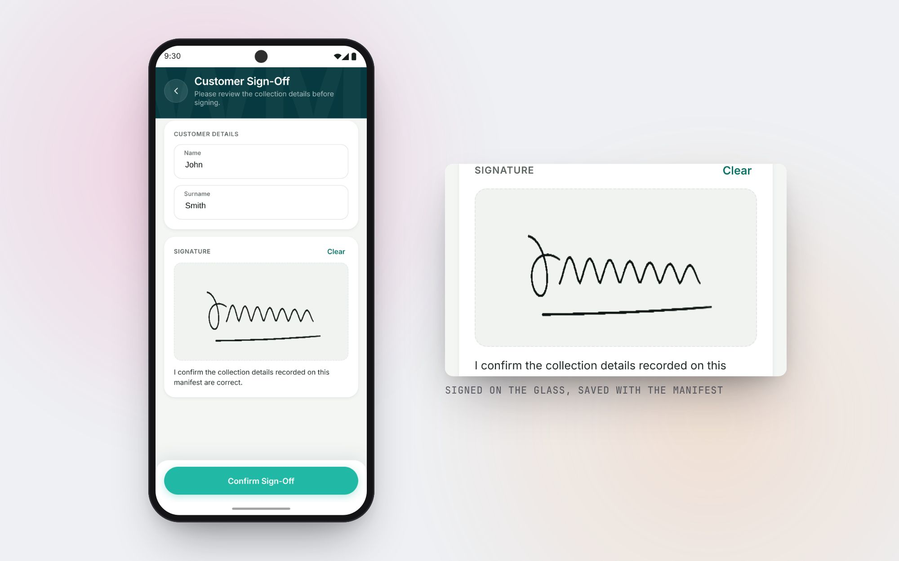
Customer sign-off: name, signature and confirmation.
06 / 06
A shift that keeps track of itself
Shift controls show whether the driver is operational, whether everything has synced, and whether anything is waiting in the offline queue. The activity log keeps the day’s dump records, fuel entries and the manifests that need attention.
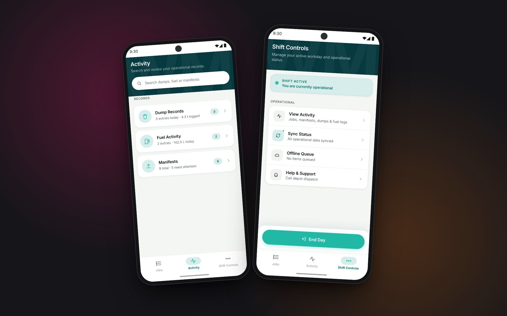
Shift controls and activity: sync, offline queue, dumps, fuel and manifests.
05 · The interface
Built for a cab, not a desk.
Large touch targets, one primary action per screen, status shown in words as well as colour, and the next step always at the bottom of the screen, in reach of a thumb.
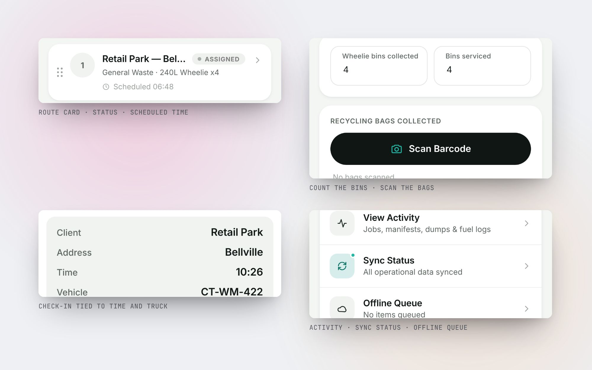
Close-ups: the route card, the bin and bag capture, the check-in summary, and sync.
06 · Build and handoff
Designed and built under one roof.
Designed and built by GEMIS’s own developers, under one roof, and supported by the same team since: quoting, payment links, scheduling, the driver app and order tracking are one system, not a design file handed to a third party. The work predates the studio’s current component-spec and handoff-session format, so none is recorded for it.
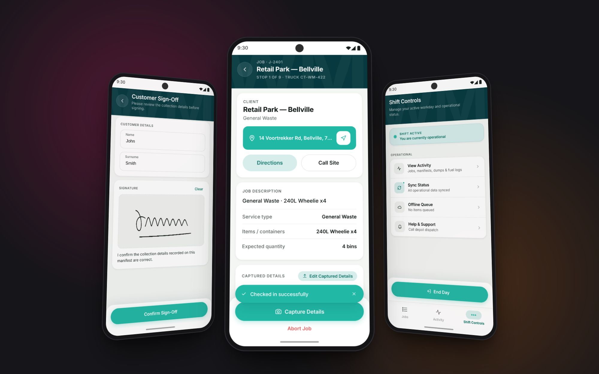
Checked in, signed off, synced.
07 · Results
Six hours a week, per depot.
6 h
a week back, per depot — confirmed by the client
A system that has grown with WasteMart for more than ten years.
Every order visible from quote to collection, for managers and customers alike.
The six hours come from the WasteMart system as a whole. The driver app’s prototype has not been measured on its own, and no usability figures are claimed.
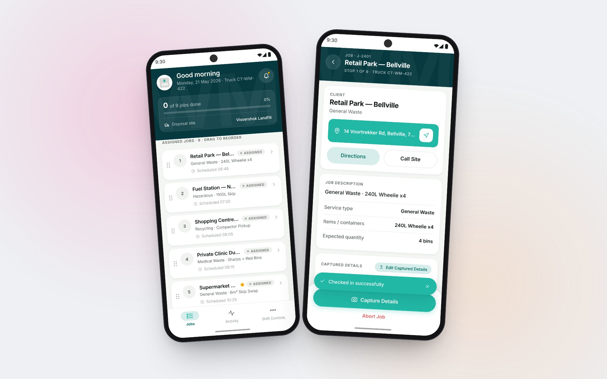
Checked in, and on to the next stop.
Client quote: A quotation from Nazier Mathinus, WasteMart, is not yet approved (endorsement-nazier-line).